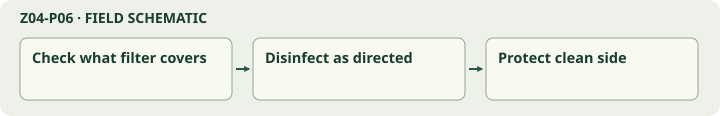

Z04-P06 · Water
Pair filtration with disinfection
Choose a matched backcountry treatment sequence and identify its limits.
When it applies · An acceptable chemical source and documented equipment capable of addressing expected microbes.
Equipment · Matched filter and disinfectant with readable instructions; clean container.

Actions
- Check product labels, intended organisms and operating conditions. Typical portable filters leave gaps, especially for viruses.[W04]
- Filter and then disinfect according to each product's directions, including concentration, contact time and water conditions.[W04, W05]
- Keep any part that contacted raw water from the clean outlet and storage vessel.[W06, ED]
Verify · Name each product, target limitation and the actual contact time used before drinking.[W04, W05, ED]
Stop or change course · Do not improvise a dose or assume an unknown filter covers viruses or chemicals. Use another known-safe supply or a supported procedure.[W01, W04, W05]
Evidence and editorial notes
- W01 · CDC · How to Make Water Safe in an Emergency
- Water with fuel or toxic chemicals in it · Suspected fuel, toxic chemicals or radioactive contamination
Use a different safe supply. Standard boiling and microbial disinfection do not make this water safe.
Primary source · checked 2026-11-24 - W04 · CDC · Water Treatment Options When Hiking, Camping, or Traveling
- Water treatment methods > Filter and disinfect · Untreated backcountry water; suitable devices and directions
Filter capability varies. Filtering then disinfecting addresses gaps left by typical portable filters. Follow both manufacturers' directions.
Primary source · checked 2026-11-24 - W05 · CDC · How to Make Water Safe in an Emergency
- Disinfect; Using light · Matched product, concentration, dose, contact time and source condition
Chemical disinfection is less dependable against some parasites. UV needs clear water and a correctly used device.
Primary source · checked 2026-11-24 - W06 · CDC · How to Create an Emergency Water Supply
- How to store emergency water; Safe storage containers · Potable water intended for emergency storage
Prefer sealed commercial water or clean food-grade tight-closing containers. Avoid containers that held toxic chemicals.
Primary source · checked 2026-11-24
Source lineage · B009 revision and CDC backcountry guide.